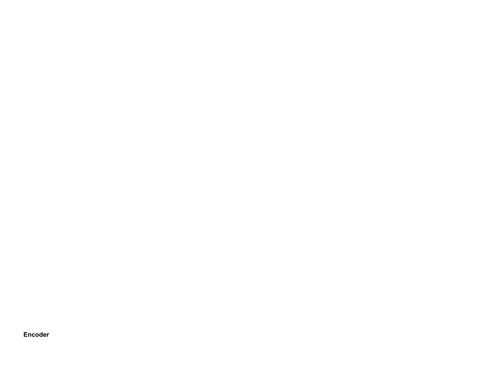
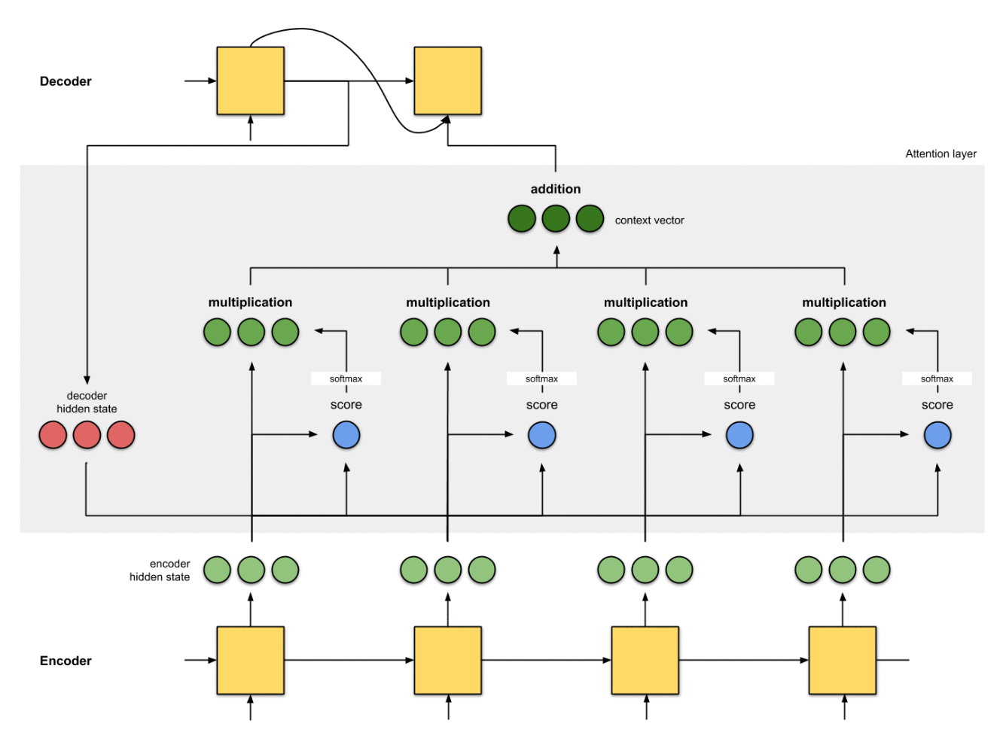

모든 것은 '더 긴 문장을 더 잘 번역하고 싶다'는 단순한 필요에서 시작되었습니다.
기존 모델이 가졌던 한계점을 살펴봅니다.
기존의 RNN(Recurrent Neural Network) 기반 Seq2seq (Sequence-to-Sequence) 모델은
번역과 같은 작업에서 획기적이었지만, 명확한 구조적 한계를 가지고 있었습니다.
이 구조는 '암기식 시험'과 같았습니다. 인코더(Encoder)가 입력 문장("나는 학생이다") 전체를 읽고,
그 의미를 하나의 고정된 크기 벡터, 즉 컨텍스트 벡터(Context Vector)로 압축해야 했습니다.
디코더(Decoder)는 오직 이 '하나의 요약 노트'에만 의존해서 "I am a student"라는 출력 문장을 생성해야 했죠.
이러한 구조는 다음과 같은 두 가지 큰 문제를 야기했습니다.
입력 시퀀스의 길이가 길어질수록 (문장이 길어질수록), 모든 정보를 하나의 고정된 크기 벡터에 욱여넣는 과정에서
정보 손실이 필연적으로 발생했습니다. 특히 문장 앞부분의 정보가 뒤로 갈수록 희석되는 문제가 있었습니다.
디코더는 단어를 생성하는 매 시점(타임스텝)마다 동일한 컨텍스트 벡터를 참조해야 했습니다.
"I"를 만들 때, "am"을 만들 때, "student"를 만들 때 모두 같은 요약 노트를 봐야 했죠. 이는 각 시점마다 필요한 정보가 다름에도 불구하고, 문맥에 따른 동적인 정보 활용이 불가능함을 의미했습니다.
'암기식 시험'을 '오픈북 시험'으로 바꾼 혁신적인 아이디어, 어텐션의 핵심 원리를 알아봅니다.
어텐션(Attention) 메커니즘은 위와 같은 한계를 극복하기 위해 제안되었습니다.
핵심 아이디어는 이 방식을 '오픈북 시험'으로 바꾼 혁신입니다.
디코더는 더 이상 하나의 요약 노트에만 의존하지 않습니다.
대신, 출력 단어를 예측하는 매 시점마다, 인코더의 전체 입력 시퀀스('원본 참고서')를 다시 한번 참고하되,
현재 예측에 가장 관련이 높은 특정 부분에 '집중(Attention)'하여 정보를 활용합니다.
이를 통해 고정된 컨텍스트 벡터가 아닌, 매번 새롭게 계산되는 동적 컨텍스트 벡터(Dynamic Context Vector)를 생성하여 정보 병목 현상을 해결합니다. 이 과정의 핵심이 바로 '가중합(Weighted Sum)'입니다.
어텐션을 작동하게 하는 세 가지 핵심 부품,
Query, Key, Value에 대해 '검색 엔진' 비유로 쉽게 이해합니다.
어텐션 메커니즘은 세 가지 주요 구성 요소인 Query, Key, Value 벡터의 상호작용으로 동작합니다.
'검색 엔진'으로 비유하면 이해하기 쉽습니다.
: 현재 디코더의 상태를 나타내는 벡터입니다.
출력 시퀀스의 특정 위치에서 "어떤 정보가 필요한가?"를 질의하는 역할을 합니다.
(디코더의 은닉 상태 벡터 \(s_t\) 사용)
인코더의 모든 시점의 은닉 상태 벡터들입니다.
Query와 연관성을 계산하기 위한 '색인' 역할을 하며,
각 Key는 특정 입력 단어의 정보를 담고 있습니다.
(인코더의 모든 은닉 상태 벡터들 \(h_1, h_2, ..., h_n\) 사용)
Key와 1:1로 매핑되는 벡터로,
Key와 마찬가지로 인코더의 모든 시점의 은닉 상태 벡터들 \(h_1, h_2, ..., h_n\)입니다. Key를 통해 연관성이 결정되면,
실제 디코더에 전달되는 '실질적인 내용'입니다.
(인코더의 모든 은닉 상태 벡터들 \(h_1, h_2, ..., h_n\) 사용)
많은 초기 어텐션 모델(Cross-Attention)에서는 Key와 Value가 인코더의 동일한 은닉 상태 벡터를 사용합니다.
하지만 개념적으로 이 둘을 분리함으로써 유연성을 확보할 수 있습니다.
Key는 Query와의 '유사도 계산'이라는 특정 목적에,
Value는 '정보의 가중합'이라는 다른 목적에 사용될 수 있도록 설계된 것입니다.
이는 이후 셀프 어텐션과 Multi-Head Attention에서 더욱 중요해집니다.
Attention 메커니즘의 전체 동작 과정을 시각적으로 나타낸 애니메이션입니다.
 "Thank you"를 "고마워"로 번역하는 과정을 통해 어텐션의 연산 흐름을 단계별로 살펴보겠습니다.
인코더는 "Thank", "you", <EOS>(문장 끝)를 순서대로 읽습니다.
기존 Seq2seq와 달리, 마지막 은닉 상태만 사용하는 것이 아니라 모든 시점의 은닉 상태 벡터들을 저장합니다.
\(h_{thank}\) = "Thank"까지 읽었을 때의 정보
\(h_{you}\) = "Thank you"까지 읽었을 때의 정보
\(h_{eos}\) = 문장 전체를 읽었을 때의 정보
이 은닉 상태 벡터의 집합이 Keys (K)이자 Values (V)가 됩니다.
Keys = [\(h_{thank}\), \(h_{you}\), \(h_{eos}\)]
Values = [\(h_{thank}\), \(h_{you}\), \(h_{eos}\)]
첫 번째 단어를 예측하기 위한 디코더의 현재 은닉 상태 \(s_0\)가 Query (Q)가 됩니다.
(즉, "첫 단어 만들 건데, 뭘 참고해야 해?"라는 질문)
Query \(s_0\)를 모든 Key 벡터들과 비교하여 유사도 점수(관련도)를 계산합니다.
(점수 계산 함수는 내적(Dot-Product) 등 다양한 방식이 사용됩니다.)
score_thank = score(\(s_0\), \(h_{thank}\))
score_you = score(\(s_0\), \(h_{you}\))
score_eos = score(\(s_0\), \(h_{eos}\))
(이때 "고마워"는 "Thank"와 "you" 모두와 관련이 깊으므로, score_thank와 score_you가 높게 나올 것입니다.)
계산된 스코어들에 소프트맥스(Softmax) 함수를 적용하여 합이 1인 확률 분포,
즉 어텐션 가중치(\(\alpha\))를 얻습니다. 이 가중치는 각 입력 단어에 얼마나 '집중'할지를 나타내는 비율입니다.
예시: weights(\(\alpha_0\)) = [0.5, 0.5, 0.0]
(이는 "Thank"와 "you"의 정보를 각각 50%씩 반영하고 <EOS>는 무시하겠다는 의미입니다.)
계산된 어텐션 가중치를 각 Value 벡터에 곱한 후 모두 더합니다 (가중합, Weighted Sum).
이를 통해 현재 타임스텝만을 위한 맞춤형(동적) 컨텍스트 벡터 \(c_0\)가 생성됩니다.
\(c_0\) = (0.5 \(\times\) \(V_{thank}\)) + (0.5 \(\times\) \(V_{you}\)) + (0.0 \(\times\) \(V_{eos}\))
디코더는 이렇게 생성된 컨텍스트 벡터 \(c_0\)와 자신의 은닉 상태 \(s_0\)를 결합(Concatenate)하여
최종적으로 "고마워"라는 단어를 예측합니다.
1. 이제 디코더는 방금 생성한 "고마워"를 다음 입력으로 받고, 자신의 은닉 상태를 \(s_1\)로 업데이트합니다.
2. 이 새로운 은닉 상태 \(s_1\)이 새로운 Query(Q)가 되어 위 2~5번 과정을 반복합니다.
3. 이제 문장이 끝났음을 알아채야 하므로, 인코더의 마지막 기록인 \(h_{eos}\)와의 관련도 점수가 가장 높게 계산될 것입니다.
(예: weights(\(\alpha_1\)) = [0.1, 0.1, 0.8])
4. 이 가중치로 새로운 컨텍스트 벡터 \(c_1\)이 만들어지고,
디코더는 이를 바탕으로 문장의 끝을 의미하는 <EOS> 토큰을 출력하며 번역을 마칩니다.
모델이 어떻게 '정답'을 배우는지, 그리고 더 빠르고 안정적으로 학습하기 위해 사용하는
특별한 훈련 기법(교사 강요)은 무엇인지 알아봅니다.
손실(Loss)은 모델이 내놓은 '예측값'(prediction)과 우리가 알고 있는 '실제 정답'(ground truth) 사이의
불일치 정도를 정량화한 지표입니다. 학생이 쓴 '오답'과 '정답'의 차이를 '틀린 정도'로 점수화하는 것과 같습니다.
모델이 "a"를 예측해야 할 상황에서 "am"을 (높은 확률로) 예측했습니다.
이때 모델은 정답인 "a"와 예측값인 "am" 사이의 차이
(주로 크로스 엔트로피 손실(Cross-Entropy Loss) 사용)를 계산합니다.
딥러닝 모델은 이 손실 값을 최소화하는 방향(즉, '틀린 정도'를 줄여나가는 방향)으로
내부 파라미터(가중치)를 업데이트(역전파, Back-propagation)하며 학습을 진행합니다.
교사 강요(Teacher Forcing)는 Seq2seq 모델의 효율적인 훈련을 위한 기법입니다. 디코더가 다음 단어를 예측할 때, 이전 타임스텝에서 모델 자신이 예측한 단어를 입력으로 사용하는 대신, 실제 정답 단어(ground truth)를 강제로 입력으로 사용합니다.
모델이 "a" 대신 "am"을 예측했을 때, 이 "am"을 다음 입력으로 사용하면 어떻게 될까요?
잘못된 입력 ("am") \(\rightarrow\) 잘못된 다음 예측 (student가 아닌 엉뚱한 단어)
첫 단추를 잘못 끼운 것처럼 그 이후의 모든 예측이 연쇄적으로 틀릴 수 있습니다.
(Error Propagation) 이는 학습을 매우 불안정하게 만듭니다.
이런 문제를 방지하기 위해, 모델이 "am"이라고 잘못 예측했더라도,
다음 단계 입력으로는 실제 정답인 "a"를 넣어줍니다.
- 모델 예측 : "am" (오답) \(\rightarrow\)
- 다음 입력 : "a" (정답) \(\rightarrow\)
- 올바른 다음 예측 ("student")을 할 확률 증가
이처럼 교사 강요는 모델의 실수가 다음 학습에 연쇄적으로 나쁜 영향을 미치는 것을 방지하여,
학습 속도를 높이고 훈련 과정을 안정화하는 데 크게 기여합니다.
어텐션은 하나의 개념에 머무르지 않고, 더 빠르고 정교하게 발전했습니다.
RNN과 함께 쓰이던 초기 어텐션부터 RNN을 대체한 셀프 어텐션까지의 진화 과정을 살펴봅니다.
어텐션은 스코어 계산 방식과 적용 대상에 따라 다양하게 발전했습니다.
스코어 계산에 작은 신경망(Feed-Forward Network)을 사용하는 덧셈(additive) 방식입니다.
디코더의 이전 은닉 상태(\(s_{t-1}\))를 Query로 사용합니다. (정교하지만 계산량이 많음)
스코어 계산에 내적(Dot-product) 등 간단한 곱셈(multiplicative) 방식을 사용합니다.
디코더의 현재 은닉 상태(\(s_t\))를 Query로 사용하여 더 간단하고 효율적입니다.
위 두 방식은 '교차 어텐션(Cross-Attention)'(디코더 \(\leftrightarrow\) 인코더)입니다.
반면, 셀프 어텐션은 하나의 시퀀스 내부(입력 시퀀스 \(\leftrightarrow\) 자기 자신)에서 단어들끼리
서로 Query, Key, Value 역할을 수행하여 관계를 파악합니다.
예시
"그 동물은 피곤해서 길을 건너지 않았다. 왜냐하면 그것은 지쳤기 때문이다."
이 문장에서 '그것'이 '길'이 아니라 '동물'을 지칭함을 파악하는 등 문장 내부의 의존 관계(dependency)를 학습합니다.
| 구분 | 바다나우/루옹 어텐션 (Cross-Attention) | 셀프 어텐션 (Self-Attention) |
|---|---|---|
| 목적 | 입력-출력 시퀀스 간의 연관성 파악 (e.g., 번역) | 단일 시퀀스 내 단어 간의 문맥적 관계 파악 |
| 참조 대상 | 디코더 \(\leftrightarrow\) 인코더 (서로 다른 두 시퀀스) | 입력 시퀀스 \(\leftrightarrow\) 자기 자신 (동일한 하나의 시퀀스) |
| Q, K, V 출처 | Q : 디코더의 은닉 상태 K, V: 인코더의 모든 은닉 상태 |
Q, K, V : 모두 동일한 입력 시퀀스로부터 생성 |
| 주요 사용 모델 | RNN 기반 Seq2seq 모델 | 트랜스포머 (Transformer) 계열 (BERT, GPT 등) |
"Attention Is All You Need"(어텐션만 있으면 돼)라는 외침과 함께 등장한
어텐션의 최종 진화형이자, 현대 AI 모델의 기반이 된 트랜스포머를 간단히 맛봅니다.
2017년, "Attention Is All You Need"라는 기념비적인 논문에서
트랜스포머(Transformer)가 등장하며 NLP 분야의 패러다임이 완전히 바뀝니다.
순차적으로 계산해야만 했던 RNN(LSTM, GRU)의 순차적 연산 구조를 완전히 배제하고,
오직 셀프 어텐션만으로 인코더와 디코더를 구성했습니다.
RNN의 재귀적인(recurrent) 구조가 사라짐으로써, 문장의 모든 단어를 한 번에 병렬적으로 처리할 수 있게 되었습니다.
이는 GPU 활용을 극대화하여 학습 속도를 비약적으로 향상시켰습니다.
또한, 셀프 어텐션을 통해 문장 내의 장거리 의존 관계(long-range dependency)
(문장의 맨 앞 단어와 맨 뒤 단어의 관계)를 RNN보다 훨씬 효과적으로 포착할 수 있게 되었습니다.
트랜스포머의 등장은 현대 자연어 처리(NLP) 분야를 지배하게 되었으며,
BERT, GPT 등 현존하는 대부분의 SOTA(State-of-the-art) 모델의 기반이 되었습니다.
바다나우와 루옹 어텐션은 RNN 기반 Seq2seq 모델의 성능을 극대화하기 위한 '보조 장치'입니다.
반면, 셀프 어텐션은 RNN 구조 자체를 대체하며 병렬 처리와 문맥 이해 능력을 한 차원 높인 '새로운 패러다임'이며,
이것이 바로 현대 LLM의 핵심입니다.